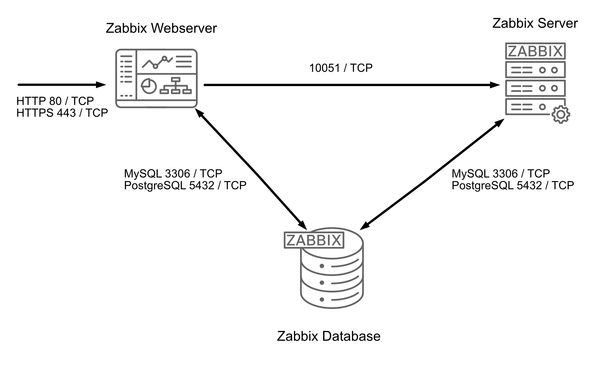
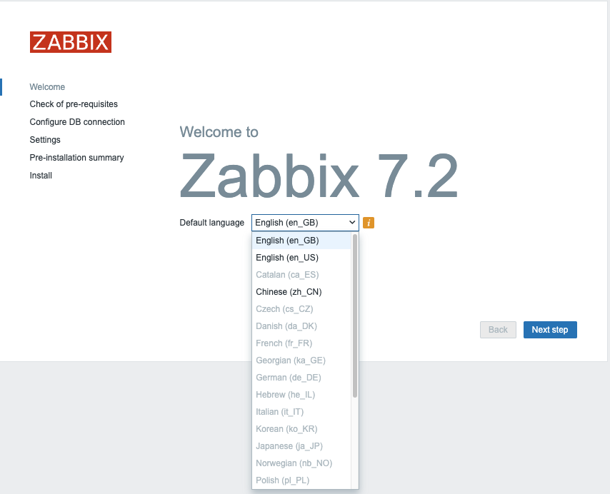
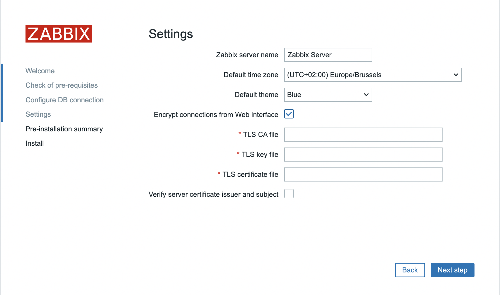
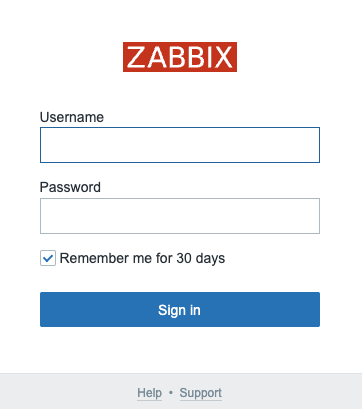

description : | Ce chapitre du livre Zabbix, intitulé « Installation de base », fournit un guide étape par étape pour l'installation d'un serveur Zabbix. Il englobe les composants essentiels - le serveur Zabbix, le serveur web (frontend) et la base de données - il détaille les configurations d'installation sur Ubuntu et Rocky Linux. Le guide met également l'accent sur les meilleures pratiques en matière de sécurité en créant des utilisateurs dédiés à la base de données avec des autorisations limitées et explique comment améliorer les performances avec une configuration de base de données distribuée. Par ailleurs, il aborde la migration obligatoire de la base de données requise pour Zabbix 7.0 et les versions ultérieures.
Installation de base
Dans ce chapitre, nous allons suivre le processus d'installation du serveur Zabbix. Il existe de nombreuses façons de configurer un serveur Zabbix. Nous couvrirons les configurations les plus courantes avec MariaDB et PostgreSQL sur Ubuntu et sur Rocky Linux.
Avant de commencer l'installation, il est important de comprendre l'architecture de Zabbix. Le serveur Zabbix est structuré de manière modulaire et se compose de trois éléments principaux, que nous allons examiner en détail.
- Le serveur Zabbix
- Le serveur web Zabbix (frontend)
- La base de données Zabbix
Création des utilisateurs de la base de données
In our setup we will create 2 DB users `zabbix-web` and `zabbix-srv`. The
zabbix-web user will be used for the frontend to connect to our zabbix database.
The zabbix-srv user will be used by our zabbix server to connect to the database.
This allows us to limit the permissions for every user to only what is strictly
needed.

1.1 Installation Zabbix de base
Tous ces composants peuvent être installés sur un seul serveur ou répartis sur trois serveurs distincts. Le cœur du système est le serveur Zabbix, souvent appelé « cerveau ». Ce composant est responsable du traitement des calculs des déclencheurs et de l'envoi des alertes. La base de données sert à stocker la configuration du serveur Zabbix et toutes les données qu'il recueille. Le serveur web fournit l'interface utilisateur (front-end) permettant d'interagir avec le système. Il est important de noter que l'API Zabbix fait partie du composant frontal, et non du serveur Zabbix lui-même.
Ces composants doivent fonctionner ensemble de manière transparente, comme l'illustre le diagramme ci-dessus. Le serveur Zabbix doit lire les configurations et stocker les données de surveillance dans la base de données, tandis que le frontal doit avoir accès à la lecture et à l'écriture des données de configuration. En outre, le frontal doit pouvoir vérifier l'état du serveur Zabbix et récupérer d'autres informations nécessaires pour assurer un fonctionnement sans soucis.
Pour notre installation, nous utiliserons deux machines virtuelles (VM) : une VM hébergera le serveur Zabbix et l'interface web Zabbix (frontend) , tandis que la seconde VM hébergera la base de données Zabbix.
Note
It's perfect possible to install all components on 1 single VM or every component on a separate VM. Reason we split the DB as an example is because the database will probably be the first component giving you performance headaches. It's also the component that needs some extra attention when we split it so for this reason we have chosen in this example to split the database from the rest of the setup.
Note
A crucial consideration for those managing Zabbix installations is the database back-end. Zabbix 7.0 marks the final release to offer support for Oracle Database. Consequently, systems running Zabbix 7.0 or any prior version must undertake a database migration to either PostgreSQL, MySQL, or a compatible fork such as MariaDB before upgrading to a later Zabbix release. This migration is a mandatory step to ensure continued functionality and compatibility with future Zabbix versions.
Les sujets suivants seront abordés :
- Installer notre base de données MariaDB.
- Installer notre base de données PostgreSQL.
- Installation du serveur Zabbix.
- Installer le serveur web Zabbix (frontend).
Installation de la base de données MariaDB
Pour commencer le processus d'installation du serveur MariaDB, la première étape consiste à créer manuellement un fichier de configuration du dépôt. Ce fichier, mariadb.repo sur Rocky, doit être placé dans le répertoire /etc/yum.repos.d/. Le fichier de dépôt permettra à votre gestionnaire de paquets de localiser et d'installer les composants MariaDB nécessaires. Pour Ubuntu, nous devons importer les clés du dépôt et créer un fichier, par exemple '/etc/apt/sources.list.d/mariadb.sources'.
Ajouter le dépôt MariaDB
Pour créer le fichier de dépôt MariaDB, exécutez la commande suivante dans votre terminal :
créer un dépôt mariadb
Red Hat
Ubuntu
Cela ouvrira un éditeur de texte dans lequel vous pourrez saisir les détails de la configuration du dépôt. Une fois le dépôt configuré, vous pouvez procéder à l'installation de MariaDB en utilisant votre gestionnaire de paquets.
Tip
Always check Zabbix documentation for the latest supported versions.
La dernière configuration est disponible ici : https://mariadb.org/download/?t=repo-config
Voici la configuration à ajouter au fichier :
Dépôt MariaDB
Red Hat
# MariaDB 11.4 RedHatEnterpriseLinux repository list - created 2025-02-21 10:15 UTC
# https://mariadb.org/download/
[mariadb]
name = MariaDB
# rpm.mariadb.org is a dynamic mirror if your preferred mirror goes offline. See https://mariadb.org/mirrorbits/ for details.
# baseurl = https://rpm.mariadb.org/11.4/rhel/$releasever/$basearch
baseurl = https://mirror.bouwhuis.network/mariadb/yum/11.4/rhel/$releasever/$basearch
# gpgkey = https://rpm.mariadb.org/RPM-GPG-KEY-MariaDB
gpgkey = https://mirror.bouwhuis.network/mariadb/yum/RPM-GPG-KEY-MariaDB
gpgcheck = 1
Ubuntu
# MariaDB 11.4 repository list - created 2025-02-21 11:42 UTC
# https://mariadb.org/download/
X-Repolib-Name: MariaDB
Types: deb
# deb.mariadb.org is a dynamic mirror if your preferred mirror goes offline. See https://mariadb.org/mirrorbits/ for details.
# URIs: https://deb.mariadb.org/11.4/ubuntu
URIs: https://mirror.bouwhuis.network/mariadb/repo/11.4/ubuntu
Suites: noble
Components: main main/debug
Signed-By: /etc/apt/keyrings/mariadb-keyring.pgp
Après avoir enregistré le fichier, assurez-vous que tout est correctement configuré et que la version de MariaDB est compatible avec la version de Zabbix afin d'éviter tout problème de compatibilité.
Avant de procéder à l'installation de MariaDB, il est recommandé de s'assurer que votre système d'exploitation est à jour avec les derniers patchs et correctifs de sécurité. Cela permettra de maintenir la stabilité du système et la compatibilité avec le logiciel que vous êtes sur le point d'installer.
Pour mettre à jour votre système d'exploitation, exécutez la commande suivante :
Cette commande va automatiquement chercher et installer les dernières mises à jour disponibles pour votre système, en appliquant les correctifs de sécurité, les améliorations de performance et les corrections de bogues. Une fois le processus de mise à jour terminé, vous pouvez poursuivre l'installation de MariaDB.
Installer la base de données MariaDB
Avec le système d'exploitation mis à jour et le dépôt MariaDB configuré, vous êtes maintenant prêt à installer les paquets serveur et client MariaDB. Vous disposerez ainsi des composants nécessaires pour faire fonctionner et gérer votre base de données.
Pour installer le serveur et le client MariaDB, exécutez la commande suivante :
Cette commande télécharge et installe les paquets serveur et client, ce qui vous permet de mettre en place, de configurer et d'interagir avec votre base de données MariaDB. Une fois l'installation terminée, vous pouvez démarrer et configurer le service MariaDB.
Maintenant que MariaDB est installé, nous devons activer le service pour qu'il démarre automatiquement au démarrage et le démarrer immédiatement. Pour ce faire, utilisez la commande suivante :
Cette commande permet d'activer et de démarrer le service MariaDB. Une fois le service lancé, vous pouvez vérifier que l'installation a réussi en vérifiant la version de MariaDB à l'aide de la commande suivante :
La sortie attendue devrait ressembler à ceci :
Pour vous assurer que le service MariaDB fonctionne correctement, vous pouvez vérifier son état à l'aide de la commande suivante :
Vous devriez voir une sortie similaire à celle-ci, indiquant que le service MariaDB est actif et fonctionne :
exemple d'état du service mariadb
mariadb.service - MariaDB 11.4.5 database server
Loaded: loaded (/usr/lib/systemd/system/mariadb.service; enabled; preset: disabled)
Drop-In: /etc/systemd/system/mariadb.service.d
└─migrated-from-my.cnf-settings.conf
Active: active (running) since Fri 2025-02-21 11:22:59 CET; 2min 8s ago
Docs: man:mariadbd(8)
https://mariadb.com/kb/en/library/systemd/
Process: 23147 ExecStartPre=/bin/sh -c systemctl unset-environment _WSREP_START_POSITION (code=exited, status=0/SUCCESS)
Process: 23148 ExecStartPre=/bin/sh -c [ ! -e /usr/bin/galera_recovery ] && VAR= || VAR=`/usr/bin/galera_recovery`; [ $? -eq 0 ] && systemctl set-enviro>
Process: 23168 ExecStartPost=/bin/sh -c systemctl unset-environment \_WSREP_START_POSITION (code=exited, status=0/SUCCESS)
Main PID: 23156 (mariadbd)
Status: "Taking your SQL requests now..."
Tasks: 7 (limit: 30620)
Memory: 281.7M
CPU: 319ms
CGroup: /system.slice/mariadb.service
└─23156 /usr/sbin/mariadbd
Feb 21 11:22:58 localhost.localdomain mariadbd[23156]: 2025-02-21 11:22:58 0 [Note] InnoDB: Loading buffer pool(s) from /var/lib/mysql/ib_buffer_pool
Feb 21 11:22:58 localhost.localdomain mariadbd[23156]: 2025-02-21 11:22:58 0 [Note] Plugin 'FEEDBACK' is disabled.
Feb 21 11:22:58 localhost.localdomain mariadbd[23156]: 2025-02-21 11:22:58 0 [Note] Plugin 'wsrep-provider' is disabled.
Feb 21 11:22:58 localhost.localdomain mariadbd[23156]: 2025-02-21 11:22:58 0 [Note] InnoDB: Buffer pool(s) load completed at 250221 11:22:58
Feb 21 11:22:58 localhost.localdomain mariadbd[23156]: 2025-02-21 11:22:58 0 [Note] Server socket created on IP: '0.0.0.0'.
Feb 21 11:22:58 localhost.localdomain mariadbd[23156]: 2025-02-21 11:22:58 0 [Note] Server socket created on IP: '::'.
Feb 21 11:22:58 localhost.localdomain mariadbd[23156]: 2025-02-21 11:22:58 0 [Note] mariadbd: Event Scheduler: Loaded 0 events
Feb 21 11:22:58 localhost.localdomain mariadbd[23156]: 2025-02-21 11:22:58 0 [Note] /usr/sbin/mariadbd: ready for connections.
Feb 21 11:22:58 localhost.localdomain mariadbd[23156]: Version: '11.4.5-MariaDB' socket: '/var/lib/mysql/mysql.sock' port: 3306 MariaDB Server
Feb 21 11:22:59 localhost.localdomain systemd[1]: Started MariaDB 11.4.5 database server.
Ceci confirme que votre serveur MariaDB est opérationnel et prêt à être configuré.
Sécuriser la base de données MariaDB
Pour améliorer la sécurité de votre serveur MariaDB, il est essentiel de supprimer les bases de données de test inutiles, les utilisateurs anonymes, et de définir un mot de passe root. Cela peut être fait en utilisant le script mariadb-secure-installation, qui fournit un guide étape par étape pour sécuriser votre base de données.
Exécutez la commande suivante :
NOTE: RUNNING ALL PARTS OF THIS SCRIPT IS RECOMMENDED FOR ALL MariaDB
SERVERS IN PRODUCTION USE! PLEASE READ EACH STEP CAREFULLY!
In order to log into MariaDB to secure it, we'll need the current
password for the root user. If you've just installed MariaDB, and
haven't set the root password yet, you should just press enter here.
Enter current password for root (enter for none):
OK, successfully used password, moving on...
Setting the root password or using the unix_socket ensures that nobody
can log into the MariaDB root user without the proper authorisation.
You already have your root account protected, so you can safely answer 'n'.
Switch to unix_socket authentication [Y/n] n
... skipping.
You already have your root account protected, so you can safely answer 'n'.
Change the root password? [Y/n] y
New password:
Re-enter new password:
Password updated successfully!
Reloading privilege tables..
... Success!
By default, a MariaDB installation has an anonymous user, allowing anyone
to log into MariaDB without having to have a user account created for
them. This is intended only for testing, and to make the installation
go a bit smoother. You should remove them before moving into a
production environment.
Remove anonymous users? [Y/n] y
... Success!
Normally, root should only be allowed to connect from 'localhost'. This
ensures that someone cannot guess at the root password from the network.
Disallow root login remotely? [Y/n] y
... Success!
By default, MariaDB comes with a database named 'test' that anyone can
access. This is also intended only for testing, and should be removed
before moving into a production environment.
Remove test database and access to it? [Y/n] y
- Dropping test database...
... Success!
- Removing privileges on test database...
... Success!
Reloading the privilege tables will ensure that all changes made so far
will take effect immediately.
Reload privilege tables now? [Y/n] y
... Success!
Cleaning up...
All done! If you've completed all of the above steps, your MariaDB
installation should now be secure.
Thanks for using MariaDB!
Le script mariadb-secure-installation vous guidera à travers plusieurs étapes clés :
- Définir un mot de passe root si ce n'est pas déjà fait.
- Supprimer les utilisateurs anonymes.
- Interdire les connexions root à distance.
- Supprimer la base de données de test.
- Recharger les tables de privilèges pour s'assurer que les modifications sont prises en compte.
Une fois terminé, votre instance MariaDB sera nettement plus sécurisée. Vous êtes maintenant prêt à configurer la base de données pour Zabbix.
Créer la base de données Zabbix
MariaDB étant maintenant configuré et sécurisé, nous pouvons passer à la création de la base de données pour Zabbix. Cette base de données stockera toutes les données nécessaires relatives à votre serveur Zabbix, y compris les informations de configuration et les données de surveillance.
Suivez ces étapes pour créer la base de données Zabbix :
- Connectez-vous à l'interpréteur de commandes MariaDB en tant qu'utilisateur root
- Il vous sera demandé d'entrer le mot de passe root que vous avez défini lors de l'installation de mariadb-secure-installation.
Une fois que vous êtes connecté au shell MariaDB, exécutez la commande suivante pour créer une base de données pour Zabbix :
Créer la base de données
MariaDB [(none)]> CREATE DATABASE zabbix CHARACTER SET utf8mb4 COLLATE utf8mb4_bin;
Note
utf8mb4 is a proper implementation of UTF-8 in MySQL/MariaDB, supporting all Unicode characters, including emojis. The older utf8 charset in MySQL/MariaDB only supports up to three bytes per character and is not a true UTF-8 implementation, which is why utf8mb4 is recommended.
Cette commande crée une nouvelle base de données nommée zabbix avec le jeu de caractères UTF-8, nécessaire pour Zabbix.
Créez un utilisateur dédié à Zabbix et accordez-lui les privilèges nécessaires : Ensuite, vous devez créer un utilisateur que Zabbix utilisera pour accéder à la base de données. Remplacez le mot de passe par un mot de passe fort de votre choix.
Créer des utilisateurs et accorder des privilèges
MariaDB [(none)]> CREATE USER 'zabbix-web'@'<zabbix server ip>' IDENTIFIED BY '<password>';
MariaDB [(none)]> CREATE USER 'zabbix-srv'@'<zabbix server ip>' IDENTIFIED BY '<password>';
MariaDB [(none)]> GRANT ALL PRIVILEGES ON zabbix.* TO 'zabbix-srv'@'<zabbix server ip>';
MariaDB [(none)]> GRANT SELECT, UPDATE, DELETE, INSERT ON zabbix.* TO 'zabbix-web'@'<zabbix server ip>';
MariaDB [(none)]> FLUSH PRIVILEGES;
Cette opération crée de nouveaux utilisateurs pour zabbix-web et zabbix-srv, leur donne accès à la base de données zabbix et garantit que les privilèges sont appliqués immédiatement.
Dans certains cas, en particulier lors de la configuration de Zabbix avec MariaDB, vous pouvez rencontrer des problèmes liés aux fonctions stockées et aux déclencheurs si la journalisation binaire est activée. Pour résoudre ce problème, vous devez définir l'option log_bin_trust_function_creators à 1 dans le fichier de configuration MariaDB. Cela permet aux utilisateurs non root de créer des fonctions stockées et des déclencheurs sans avoir besoin des privilèges SUPER, qui sont restreints lorsque la journalisation binaire est activée.
!!! info "Activer temporairement les privilèges supplémentaires pour les utilisateurs non root"
```sql
MariaDB [(none)]> SET GLOBAL log_bin_trust_function_creators = 1;
MariaDB [(none)]> QUIT
```
A ce stade, votre base de données Zabbix est prête, et vous pouvez procéder à la configuration du serveur Zabbix pour qu'il se connecte à la base de données.
Warning
In the Zabbix documentation, it is explicitly stated that deterministic triggers need to be created during the schema import. On MySQL and MariaDB systems, this requires setting GLOBAL log_bin_trust_function_creators = 1 if binary logging is enabled, and you lack superuser privileges.
If the log_bin_trust_function_creators option is not set in the MySQL configuration file, it will block the creation of these triggers during schema import. This is essential because, without superuser access, non-root users cannot create triggers or stored functions unless this setting is applied.
To summarize:
-
Binary logging enabled: If binary logging is enabled and the user does not have superuser privileges, the creation of necessary Zabbix triggers will fail unless log_bin_trust_function_creators = 1 is set.
-
Solution: Add log_bin_trust_function_creators = 1 to the [mysqld] section in your MySQL/MariaDB configuration file or temporarily set it at runtime with SET GLOBAL log_bin_trust_function_creators = 1 if you have sufficient permissions.
This ensures that Zabbix can successfully create the required triggers during schema import without encountering privilege-related errors.
Si nous voulons que notre serveur Zabbix se connecte à notre base de données, nous devons également ouvrir le port de notre pare-feu.
Ajouter des règles de pare-feu
Red Hat
Ubuntu
Remplir la base de données MariaDB de Zabbix
Avec les utilisateurs et les permissions configurés correctement, vous pouvez maintenant remplir la base de données avec le schéma Zabbix créé et d'autres éléments requis. Suivez les étapes suivantes :
Une des premières choses à faire est d'ajouter le dépôt Zabbix à notre machine. Cela peut sembler bizarre mais c'est en fait logique car nous avons besoin de remplir notre base de données avec nos schémas Zabbix.
Ajouter le dépôt Zabbix et les scripts d'installation
Red Hat
rpm -Uvh https://repo.zabbix.com/zabbix/7.2/release/rocky/9/noarch/zabbix-release-latest-7.2.el9.noarch.rpm
dnf clean all
dnf install zabbix-sql-scripts
Ubuntu
Maintenant nous allons télécharger les données de zabbix (structure de la base
de données, images, utilisateur, ... ) pour cela nous utilisons l'utilisateur
zabbix-srv et nous téléchargeons le tout dans notre base de données zabbix.
Remplir la base de données
Red Hat and Ubuntu
Note
Depending on the speed of your hardware or virtual machine, the process may take anywhere from a few seconds to several minutes. Please be patient and avoid cancelling the operation; just wait for the prompt to appear.
Reconnectez-vous à votre base de données MySQL en tant que root
Entrez dans MariaDB en tant qu'utilisateur root
mariadb -uroot -p
Une fois que l'importation du schéma Zabbix est terminée et que vous n'avez plus besoin du paramètre global log_bin_trust_function_creators, c'est une bonne pratique de le supprimer pour des raisons de sécurité.
Pour annuler la modification et remettre le paramètre global à 0, utilisez la commande suivante dans l'interpréteur de commandes MariaDB :
Désactiver à nouveau la fonction log_bin_trust
Cette commande désactivera le paramètre, garantissant que la posture de sécurité des serveurs reste robuste.
Ceci conclut notre installation du serveur MariaDB
Installation de la base de données PostgreSQL
For our DB setup with PostgreSQL we need to add our PostgreSQL repository first to the system. As of writing PostgreSQL 13-17 are supported but best is to have a look before you install it as new versions may be supported and older maybe unsupported both by Zabbix and PostgreSQL. Usually it's a good idea to go with the latest version that is supported by Zabbix. Zabbix also supports the extension TimescaleDB this is something we will talk later about. As you will see the setup from PostgreSQL is very different from MySQL not only the installation but also securing the DB.
The table of compatibility can be found https://docs.timescale.com/self-hosted/latest/upgrades/upgrade-pg/
Add the PostgreSQL repository
So let us start first setting up our PostgreSQL repository with the following commands.
Add PostgreSQL repo
Red Hat
Install the repository RPM:
dnf install https://download.postgresql.org/pub/repos/yum/reporpms/EL-9-x86_64/pgdg-redhat-repo-latest.noarch.rpm
Disable the built-in PostgreSQL module:
dnf -qy module disable postgresql
Ubuntu
# Import the repository signing key:
sudo apt install curl ca-certificates
sudo install -d /usr/share/postgresql-common/pgdg
sudo curl -o /usr/share/postgresql-common/pgdg/apt.postgresql.org.asc --fail https://www.postgresql.org/media/keys/ACCC4CF8.asc
# Create the repository configuration file:
sudo sh -c 'echo "deb [signed-by=/usr/share/postgresql-common/pgdg/apt.postgresql.org.asc] https://apt.postgresql.org/pub/repos/apt $(lsb_release -cs)-pgdg main" > /etc/apt/sources.list.d/pgdg.list'
# Update the package lists:
sudo apt update
Install the PostgreSQL databases
Install the Postgres server
Red Hat
# Install Postgres server:
dnf install postgresql17-server
# Initialize the database and enable automatic start:
/usr/pgsql-17/bin/postgresql-17-setup initdb
systemctl enable postgresql-17 --now
Ubuntu
Pour mettre à jour votre système d'exploitation, exécutez la commande suivante :
Securing the PostgreSQL database
PostgreSQL handles access permissions differently from MySQL and MariaDB. PostgreSQL relies on a file called pg_hba.conf to manage who can access the database, from where, and what encryption method is used for authentication.
Note
Client authentication in PostgreSQL is configured through the pg_hba.conf file, where "HBA" stands for Host-Based Authentication. This file specifies which users can access the database, from which hosts, and how they are authenticated. For further details, you can refer to the official PostgreSQL documentation." https://www.postgresql.org/docs/current/auth-pg-hba-conf.html
Add the following lines, the order here is important.
Edit the pg_hba file
Red hat
Ubuntu
The result should look like :
pg_hba example
# "local" is for Unix domain socket connections only
local zabbix zabbix-srv scram-sha-256
local all all peer
# IPv4 local connections
host zabbix zabbix-srv <ip from zabbix server/24> scram-sha-256
host zabbix zabbix-web <ip from zabbix server/24> scram-sha-256
host all all 127.0.0.1/32 scram-sha-256
After we changed the pg_hba file don't forget to restart postgres else the settings will not be applied. But before we restart let us also edit the file postgresql.conf and allow our database to listen on our network interface for incoming connections from the zabbix server. Postgresql will standard only allow connections from the socket.
Edit postgresql.conf file
Red Hat
Ubuntu
To configure PostgreSQL to listen on all network interfaces, you need to modify
the postgresql.conf file. Locate the following line:
and replace it with:
listen_addresses = '*'
Note
This will enable PostgreSQL to accept connections from any network interface, not just the local machine. In production it's probably a good idea to limit who can connect to the DB.
After making this change, restart the PostgreSQL service to apply the new settings:
restart the DB server
Red Hat
Ubuntu
If the service fails to restart, review the pg_hba.conf file for any syntax errors, as incorrect entries here may prevent PostgreSQL from starting.
Next, to prepare your PostgreSQL instance for Zabbix, you'll need to create the necessary database tables. Begin by installing the Zabbix repository, as you did for the Zabbix server. Then, install the appropriate Zabbix package that contains the predefined tables, images, icons, and other database elements needed for the Zabbix application.
Create the Zabbix database with PostgreSQL
To begin, add the Zabbix repository to your system by running the following commands:
Add zabbix schema repos package
Red Hat
dnf install https://repo.zabbix.com/zabbix/7.2/release/rocky/9/noarch/zabbix-release-latest-7.2.el9.noarch.rpm
dnf install zabbix-sql-scripts
Ubuntu
With the necessary packages installed, you are now ready to create the Zabbix users for both the server and frontend.
First, switch to the postgres user and create the Zabbix server database user:
create server users
Next, create the Zabbix frontend user, which will be used to connect to the database:
Create front-end user
After creating the users, you need to prepare the database schema. As the root or your regular user, unzip the necessary schema files by running the following command:
Unzip the DB patch
Red Hat
Ubuntu
Note
Zabbix seems to like to change the locations of the script to populate the DB every version or in between versions. If you encounter an error take a look at the Zabbix documentation there is a good chance that some location was changed.
This will extract the database schema required for the Zabbix server.
Now that the users are created, the next step is to create the Zabbix database.
First, switch to the postgres user and execute the following command to create
the database with the owner set to zabbix-srv:
Create DB
Red Hat
Ubuntu
Once the database is created, you should verify the connection and ensure that the correct user session is active. To do this, log into the zabbix database using the zabbix-srv user:
After logging in, run the following SQL query to confirm that both the
session_user and current_user are set to zabbix-srv:
If the output matches, you are successfully connected to the database with the correct user.
PostgreSQL indeed differs significantly from MySQL or MariaDB in several aspects, and one of the key features that sets it apart is its use of schemas. Unlike MySQL, where databases are more standalone, PostgreSQL's schema system provides a structured, multi-user environment within a single database.
Schemas act as logical containers within a database, enabling multiple users or applications to access and manage data independently without conflicts. This feature is especially valuable in environments where several users or applications need to interact with the same database concurrently. Each user or application can have its own schema, preventing accidental interference with each other's data.
Note
PostgreSQL comes with a default schema, typically called public, but it's in general best practice to create custom schemas to better organize and separate database objects, especially in complex or multi-user environments.
For more in-depth information, I recommend checking out the detailed guide at this URI, https://hevodata.com/learn/postgresql-schema/#schema which explains the benefits and use cases for schemas in PostgreSQL.
To finalize the database setup for Zabbix, we need to configure schema
permissions for both the zabbix-srv and zabbix-web users.
First, we create a custom schema named zabbix_server and assign ownership to
the zabbix-srv user:
Next, we set the search path to zabbix_server schema so that it's the
default for the current session:
To confirm the schema setup, you can list the existing schemas:
verify schema access
At this point, the zabbix-srv user has full access to the schema, but the
zabbix-web user still needs appropriate permissions to connect and interact
with the database. First, we grant USAGE privileges on the schema to allow
zabbix-web to connect:
Grant access to schema for user zabbix-web
Populate the Zabbix PostgreSQL DB
Now, the zabbix-web user has appropriate access to interact with the schema
while maintaining security by limiting permissions to essential operations.
Avec les utilisateurs et les permissions configurés correctement, vous pouvez maintenant remplir la base de données avec le schéma Zabbix créé et d'autres éléments requis. Suivez les étapes suivantes :
- Execute the SQL file to populate the database. Run the following command in
the
psqlshell:
Warning
Make sure you did previous steps carefully so that you have selected the correct search_path.
upload the DB schema to db zabbix
Warning
Depending on your hardware or VM performance, this process can take anywhere from a few seconds to several minutes. Please be patient and avoid cancelling the operation.
- Monitor the progress as the script runs. You will see output similar to:
Output example
Once the script completes and you return to the zabbix=# prompt, the database
should be successfully populated with all the required tables, schemas, images,
and other elements needed for Zabbix.
However, zabbix-web still cannot perform any operations on the tables or
sequences. To allow basic data interaction without giving too many privileges,
grant the following permissions:
- For tables: SELECT, INSERT, UPDATE, and DELETE.
- For sequences: SELECT and UPDATE.
Grant rights on the schema to user zabbix-web
Verify if the rights are correct on the schema :
Example schema rights
zabbix=> \dn+
List of schemas
Name | Owner | Access privileges | Description
---------------+-------------------+----------------------------------------+------------------------
public | pg_database_owner | pg_database_owner=UC/pg_database_owner+| standard public schema
| | =U/pg_database_owner |
zabbix_server | zabbix-srv | "zabbix-srv"=UC/"zabbix-srv" +|
| | "zabbix-web"=U/"zabbix-srv" |
Note
If you encounter the following error during the SQL import:
vbnet psql:/usr/share/zabbix/sql-scripts/postgresql/server.sql:7: ERROR: no
schema has been selected to create in It indicates that the search_path setting
might not have been correctly applied. This setting is crucial because it specifies
the schema where the tables and other objects should be created. By correctly
setting the search path, you ensure that the SQL script will create tables
and other objects in the intended schema.
To ensure that the Zabbix tables were created successfully and have the correct
permissions, you can verify the table list and their ownership using the psql
command:
- List the Tables: Use the following command to list all tables in the
zabbix_serverschema:
You should see a list of tables with their schema, name, type, and owner. For example:
List table with relations
zabbix=> \dt
List of relations
Schema | Name | Type | Owner
---------------+----------------------------+-------+------------
zabbix_server | acknowledges | table | zabbix-srv
zabbix_server | actions | table | zabbix-srv
zabbix_server | alerts | table | zabbix-srv
zabbix_server | auditlog | table | zabbix-srv
zabbix_server | autoreg_host | table | zabbix-srv
zabbix_server | changelog | table | zabbix-srv
zabbix_server | conditions | table | zabbix-srv
...
...
...
zabbix_server | valuemap | table | zabbix-srv
zabbix_server | valuemap_mapping | table | zabbix-srv
zabbix_server | widget | table | zabbix-srv
zabbix_server | widget_field | table | zabbix-srv
(203 rows)
- Verify Permissions: Confirm that the zabbix-srv user owns the tables and has the necessary permissions. You can check permissions for specific tables using the \dp command:
Access privileges
Schema | Name | Type | Access privileges | Column privileges | Policies
---------------+----------------------------+----------+------------------------------------+-------------------+----------
zabbix_server | acknowledges | table | "zabbix-srv"=arwdDxtm/"zabbix-srv"+| |
| | | "zabbix-web"=arwd/"zabbix-srv" | |
zabbix_server | actions | table | "zabbix-srv"=arwdDxtm/"zabbix-srv"+| |
| | | "zabbix-web"=arwd/"zabbix-srv" | |
zabbix_server | alerts | table | "zabbix-srv"=arwdDxtm/"zabbix-srv"+| |
| | | "zabbix-web"=arwd/"zabbix-srv" | |
zabbix_server | auditlog | table | "zabbix-srv"=arwdDxtm/"zabbix-srv"+| |
This will display the access privileges for all tables in the zabbix_server
schema. Ensure that zabbix-srv has the required privileges.
If everything looks correct, your tables are properly created and the
zabbix-srv user has the appropriate ownership and permissions. If you need to
adjust any permissions, you can do so using the GRANT commands as needed.
Note
If you prefer not to set the search path manually each time you log in as the
zabbix-srv user, you can configure PostgreSQL to automatically use the desired
search path. Run the following SQL command to set the default search path for
the zabbix-srv role:
sql zabbix=> ALTER ROLE "zabbix-srv" SET search_path = "$user", public, zabbix_server;
This command ensures that every time the zabbix-srv user connects to the
database, the search_path is automatically set to include $user, public, and zabbix_server.
If you are ready you can exit the database and return as user root.
If we want our Zabbix server to be able to connect to our DB then we also need to open our firewall port.
Red Hat
Ubuntu
Note
Make sure your DB is listening on the correct IP and not on 127.0.0.1. You could add the following files to your config file. This would allow MariaDB to listen on all interfaces. Best to limit it only to the needed IP.
/etc/mysql/mariadb.cnf
[mariadb] log_error=/var/log/mysql/mariadb.err log_warnings=3 bind-address = 0.0.0.0
This concludes our installation of the PostgreSQL database.
Installing the Zabbix server for MariaDB/Mysql
Before proceeding with the installation of your Zabbix server, ensure that the server is properly configured, as outlined in the previous section System Requirements
Another critical step at this stage if you use Red Hat based systems is disabling SELinux, which can interfere with the installation and operation of Zabbix. We will revisit SELinux at the end of this chapter once our installation is finished.
To check the current status of SELinux, you can use the following command: `sestatus``
Selinux status
SELinux status: enabled
SELinuxfs mount: /sys/fs/selinux
SELinux root directory: /etc/selinux
Loaded policy name: targeted
Current mode: enforcing
Mode from config file: enforcing
Policy MLS status: enabled
Policy deny_unknown status: allowed
Memory protection checking: actual (secure)
Max kernel policy version: 33
As shown, the system is currently in enforcing mode. To temporarily disable
SELinux, you can run the following command: setenforce 0
Disable SeLinux
SELinux status: enabled
SELinuxfs mount: /sys/fs/selinux
SELinux root directory: /etc/selinux
Loaded policy name: targeted
Current mode: permissive
Mode from config file: enforcing
Policy MLS status: enabled
Policy deny_unknown status: allowed
Memory protection checking: actual (secure)
Max kernel policy version: 33
Now, as you can see, the mode is switched to permissive. However, this change is
not persistent across reboots. To make it permanent, you need to modify the
SELinux configuration file located at /etc/selinux/config. Open the file and
replace enforcing with permissive.
Alternatively, you can achieve the same result more easily by running the following command:
Disable SeLinux permanent
Red Hat
This line will alter the configuration file for you. So when we run sestatus
again we will see that we are in permissive mode and that our configuration
file is also in permissive mode.
Verify selinux status again
SELinux status: enabled
SELinuxfs mount: /sys/fs/selinux
SELinux root directory: /etc/selinux
Loaded policy name: targeted
Current mode: permissive
Mode from config file: permissive
Policy MLS status: enabled
Policy deny_unknown status: allowed
Memory protection checking: actual (secure)
Max kernel policy version: 33
Adding the Zabbix repository
From the Zabbix Download page https://www.zabbix.com/download, select the appropriate Zabbix version you wish to install. In this case, we will be using Zabbix 8.0 LTS. Additionally, ensure you choose the correct OS distribution for your environment, which will be Rocky Linux 9 or Ubuntu 24.04 in our case.
We will be installing the Zabbix Server along with NGINX as the web server for the front-end. Make sure to download the relevant packages for your chosen configuration.

1.2 Zabbix download
If you make use of a RHEL based system like Rocky then the first step is to
disable the Zabbix packages provided by the EPEL repository, if it's installed
on your system. To do this, edit the /etc/yum.repos.d/epel.repo file and add
the following statement to disable the EPEL repository by default:
Tip
It's considered bad practice to keep the EPEL repository enabled all the time,
as it may cause conflicts by unintentionally overwriting or installing unwanted
packages. Instead, it's safer to enable the repository only when needed, by using
the following command during installations: dnf install --enablerepo=epel
Next, we will install the Zabbix repository on our operating system. After adding the Zabbix repository, it is recommended to perform a repository cleanup to remove old cache files and ensure the repository metadata is up to date. You can do this by running:
Add the zabbix repo
Red Hat
rpm -Uvh https://repo.zabbix.com/zabbix/7.2/release/rocky/9/noarch/zabbix-release-latest-7.2.el9.noarch.rpm
dnf clean all
Ubuntu
This will refresh the repository metadata and prepare the system for Zabbix installation.
Note
A repository in Linux is a configuration that allows you to access and install software packages. You can think of it like an "app store" where you find and download software from a trusted source, in this case, the Zabbix repository. Many repositories are available, but it's important to only add those you trust. The safest practice is to stick to the repositories provided by your operating system and only add additional ones when you're sure they are both trusted and necessary.
For our installation, the Zabbix repository is provided by the vendor itself, making it a trusted source. Another popular and safe repository for Red Hat-based systems is EPEL (Extra Packages for Enterprise Linux), which is commonly used in enterprise environments. However, always exercise caution when adding new repositories to ensure system security and stability.
Configuring the Zabbix server for MySQL/MariaDB
Now that we've added the Zabbix repository with the necessary software, we are ready to install both the Zabbix server and the web server. Keep in mind that the web server doesn't need to be installed on the same machine as the Zabbix server; they can be hosted on separate systems if desired.
To install the Zabbix server and the web server components for MySQL/MariaDB, run the following command:
Install the zabbix server
Red Hat
Ubuntu
After successfully installing the Zabbix server and frontend packages, we need
to configure the Zabbix server to connect to the database. This requires
modifying the Zabbix server configuration file. Open the
/etc/zabbix/zabbix_server.conf file and update the following lines to match
your database configuration:
Edit zabbix server config
Red Hat and Ubuntu
Replace <database-host>, <database-name>, <database-user>, and
<database-password> with the appropriate values for your setup. This ensures
that the Zabbix server can communicate with your database.
Ensure that there is no # (comment symbol) in front of the configuration parameters, as Zabbix will treat lines beginning with # as comments, ignoring them during execution. Additionally, double-check for duplicate configuration lines; if there are multiple lines with the same parameter, Zabbix will use the value from the last occurrence.
For our setup, the configuration will look like this:
Example config
In this example:
- DBHost refers to the host where your database is running (use localhost if it's on the same machine).
- DBName is the name of the Zabbix database.
- DBUser is the database user.
- DBPassword is the password for the database user.
Make sure the settings reflect your environment's database configuration.
Note
The Zabbix server configuration file offers an option to include additional configuration files for custom parameters. For a production environment, it's often best to avoid altering the original configuration file directly. Instead, you can create and include a separate configuration file for any additional or modified parameters. This approach ensures that your original configuration file remains untouched, which is particularly useful when performing upgrades or managing configurations with tools like Ansible, Puppet, or SaltStack.
To enable this feature, remove the # from the line:
Ensure the path /usr/local/etc/zabbix_server.conf.d/ exists and create a
custom configuration file in this directory. This file should be readable by the
zabbix user. By doing so, you can add or modify parameters without modifying
the default configuration file, making system management and upgrades smoother.
With the Zabbix server configuration updated to connect to your database, you can now start and enable the Zabbix server service. Run the following command to enable the Zabbix server and ensure it starts automatically on boot:
Note
Before restarting the Zabbix server after modifying its configuration, it is
considered best practice to validate the configuration to prevent potential
issues. Running a configuration check ensures that any errors are detected
beforehand, avoiding downtime caused by an invalid configuration. This can
be accomplished using the following command: zabbix-server -T
This command will start the Zabbix server service immediately and configure it
to launch on system startup. To verify that the Zabbix server is running
correctly, check the log file for any messages. You can view the latest entries
in the Zabbix server log file using:
Look for messages indicating that the server has started successfully. If there are any issues, the log file will provide details to help with troubleshooting.
Exemple de sortie
12074:20250225:145333.529 Starting Zabbix Server. Zabbix 7.2.4 (revision c34078a4563).
12074:20250225:145333.530 ****** Enabled features ******
12074:20250225:145333.530 SNMP monitoring: YES
12074:20250225:145333.530 IPMI monitoring: YES
12074:20250225:145333.530 Web monitoring: YES
12074:20250225:145333.530 VMware monitoring: YES
12074:20250225:145333.530 SMTP authentication: YES
12074:20250225:145333.530 ODBC: YES
12074:20250225:145333.530 SSH support: YES
12074:20250225:145333.530 IPv6 support: YES
12074:20250225:145333.530 TLS support: YES
12074:20250225:145333.530 ******************************
12074:20250225:145333.530 using configuration file: /etc/zabbix/zabbix_server.conf
12074:20250225:145333.545 current database version (mandatory/optional): 07020000/07020000
12074:20250225:145333.545 required mandatory version: 07020000
12075:20250225:145333.557 starting HA manager
12075:20250225:145333.566 HA manager started in active mode
12074:20250225:145333.567 server #0 started [main process]
12076:20250225:145333.567 server #1 started [service manager #1]
12077:20250225:145333.567 server #2 started [configuration syncer #1]
12078:20250225:145333.718 server #3 started [alert manager #1]
12079:20250225:145333.719 server #4 started [alerter #1]
12080:20250225:145333.719 server #5 started [alerter #2]
12081:20250225:145333.719 server #6 started [alerter #3]
12082:20250225:145333.719 server #7 started [preprocessing manager #1]
12083:20250225:145333.719 server #8 started [lld manager #1]
If there was an error and the server was not able to connect to the database you would see something like this in the server log file :
Example log with errors
12068:20250225:145309.018 Starting Zabbix Server. Zabbix 7.2.4 (revision c34078a4563).
12068:20250225:145309.018 ****** Enabled features ******
12068:20250225:145309.018 SNMP monitoring: YES
12068:20250225:145309.018 IPMI monitoring: YES
12068:20250225:145309.018 Web monitoring: YES
12068:20250225:145309.018 VMware monitoring: YES
12068:20250225:145309.018 SMTP authentication: YES
12068:20250225:145309.018 ODBC: YES
12068:20250225:145309.018 SSH support: YES
12068:20250225:145309.018 IPv6 support: YES
12068:20250225:145309.018 TLS support: YES
12068:20250225:145309.018 ******************************
12068:20250225:145309.018 using configuration file: /etc/zabbix/zabbix_server.conf
12068:20250225:145309.027 [Z3005] query failed: [1146] Table 'zabbix.users' doesn't exist [select userid from users limit 1]
12068:20250225:145309.027 cannot use database "zabbix": database is not a Zabbix database
Let's check the Zabbix server service to see if it's enabled so that it survives a reboot
check status of zabbix-server service
zabbix-server.service - Zabbix Server
Loaded: loaded (/usr/lib/systemd/system/zabbix-server.service; enabled; preset: disabled)
Active: active (running) since Tue 2025-02-25 14:53:33 CET; 26min ago
Main PID: 12074 (zabbix_server)
Tasks: 77 (limit: 24744)
Memory: 71.5M
CPU: 18.535s
CGroup: /system.slice/zabbix-server.service
├─12074 /usr/sbin/zabbix_server -c /etc/zabbix/zabbix_server.conf
├─12075 "/usr/sbin/zabbix_server: ha manager"
├─12076 "/usr/sbin/zabbix_server: service manager #1 [processed 0 events, updated 0 event tags, deleted 0 problems, synced 0 service updates, idle 5.027667 sec during 5.042628 sec]"
├─12077 "/usr/sbin/zabbix_server: configuration syncer [synced configuration in 0.051345 sec, idle 10 sec]"
├─12078 "/usr/sbin/zabbix_server: alert manager #1 [sent 0, failed 0 alerts, idle 5.030391 sec during 5.031944 sec]"
├─12079 "/usr/sbin/zabbix_server: alerter #1 started"
├─12080 "/usr/sbin/zabbix_server: alerter #2 started"
├─12081 "/usr/sbin/zabbix_server: alerter #3 started"
├─12082 "/usr/sbin/zabbix_server: preprocessing manager #1 [queued 0, processed 0 values, idle 5.023818 sec during 5.024830 sec]"
├─12083 "/usr/sbin/zabbix_server: lld manager #1 [processed 0 LLD rules, idle 5.017278sec during 5.017574 sec]"
├─12084 "/usr/sbin/zabbix_server: lld worker #1 [processed 1 LLD rules, idle 21.031209 sec during 21.063879 sec]"
├─12085 "/usr/sbin/zabbix_server: lld worker #2 [processed 1 LLD rules, idle 43.195541 sec during 43.227934 sec]"
├─12086 "/usr/sbin/zabbix_server: housekeeper [startup idle for 30 minutes]"
├─12087 "/usr/sbin/zabbix_server: timer #1 [updated 0 hosts, suppressed 0 events in 0.017595 sec, idle 59 sec]"
├─12088 "/usr/sbin/zabbix_server: http poller #1 [got 0 values in 0.000071 sec, idle 5 sec]"
├─12089 "/usr/sbin/zabbix_server: browser poller #1 [got 0 values in 0.000066 sec, idle 5 sec]"
├─12090 "/usr/sbin/zabbix_server: discovery manager #1 [processing 0 rules, 0 unsaved checks]"
├─12091 "/usr/sbin/zabbix_server: history syncer #1 [processed 4 values, 3 triggers in 0.027382 sec, idle 1 sec]"
├─12092 "/usr/sbin/zabbix_server: history syncer #2 [processed 0 values, 0 triggers in 0.000077 sec, idle 1 sec]"
├─12093 "/usr/sbin/zabbix_server: history syncer #3 [processed 0 values, 0 triggers in 0.000076 sec, idle 1 sec]"
├─12094 "/usr/sbin/zabbix_server: history syncer #4 [processed 0 values, 0 triggers in 0.000020 sec, idle 1 sec]"
├─12095 "/usr/sbin/zabbix_server: escalator #1 [processed 0 escalations in 0.011627 sec, idle 3 sec]"
├─12096 "/usr/sbin/zabbix_server: proxy poller #1 [exchanged data with 0 proxies in 0.000081 sec, idle 5 sec]"
├─12097 "/usr/sbin/zabbix_server: self-monitoring [processed data in 0.000068 sec, idle 1 sec]"
This concludes our chapter on installing and configuring the Zabbix server with Mariadb.
Installing the Zabbix server for PostgreSQL
Before proceeding with the installation of your Zabbix server, ensure that the server is properly configured, as outlined in the previous section System Requirements
Another critical step at this stage if you use Red Hat based systems is disabling SELinux, which can interfere with the installation and operation of Zabbix. We will revisit SELinux at the end of this chapter once our installation is finished.
To check the current status of SELinux, you can use the following command: `sestatus``
check the selinux status
sestatus
SELinux status: enabled
SELinuxfs mount: /sys/fs/selinux
SELinux root directory: /etc/selinux
Loaded policy name: targeted
Current mode: enforcing
Mode from config file: enforcing
Policy MLS status: enabled
Policy deny_unknown status: allowed
Memory protection checking: actual (secure)
Max kernel policy version: 33
As shown, the system is currently in enforcing mode. To temporarily disable
SELinux, you can run the following command: setenforce 0
change selinux to permissive
SELinux status: enabled
SELinuxfs mount: /sys/fs/selinux
SELinux root directory: /etc/selinux
Loaded policy name: targeted
Current mode: permissive
Mode from config file: enforcing
Policy MLS status: enabled
Policy deny_unknown status: allowed
Memory protection checking: actual (secure)
Max kernel policy version: 33
Now, as you can see, the mode is switched to permissive. However, this change is
not persistent across reboots. To make it permanent, you need to modify the
SELinux configuration file located at /etc/selinux/config. Open the file and
replace enforcing with permissive.
Alternatively, you can achieve the same result more easily by running the following command:
Adapt selinux config permanently
Red Hat
This line will alter the configuration file for you. So when we run sestatus
again we will see that we are in permissive mode and that our configuration
file is also in permissive mode.
check if everything is disabled
sestatus
SELinux status: enabled
SELinuxfs mount: /sys/fs/selinux
SELinux root directory: /etc/selinux
Loaded policy name: targeted
Current mode: permissive
Mode from config file: permissive
Policy MLS status: enabled
Policy deny_unknown status: allowed
Memory protection checking: actual (secure)
Max kernel policy version: 33
Adding the Zabbix repository
From the Zabbix Download page https://www.zabbix.com/download, select the appropriate Zabbix version you wish to install. In this case, we will be using Zabbix 8.0 LTS. Additionally, ensure you choose the correct OS distribution for your environment, which will be Rocky Linux 9 or Ubuntu 24.04 in our case.
We will be installing the Zabbix Server along with NGINX as the web server for the front-end. Make sure to download the relevant packages for your chosen configuration.
1.3 Zabbix download
If you make use of a RHEL based system like Rocky then the first step is to
disable the Zabbix packages provided by the EPEL repository, if it's installed
on your system. To do this, edit the /etc/yum.repos.d/epel.repo file and add
the following statement to disable the EPEL repository by default:
Tip
It's considered bad practice to keep the EPEL repository enabled all the time,
as it may cause conflicts by unintentionally overwriting or installing unwanted
packages. Instead, it's safer to enable the repository only when needed, by using
the following command during installations: dnf install --enablerepo=epel
Next, we will install the Zabbix repository on our operating system. After adding the Zabbix repository, it is recommended to perform a repository cleanup to remove old cache files and ensure the repository metadata is up to date. You can do this by running:
add the repo
Red Hat
rpm -Uvh https://repo.zabbix.com/zabbix/7.2/release/rocky/9/noarch/zabbix-release-latest-7.2.el9.noarch.rpm
dnf clean all
Ubuntu
This will refresh the repository metadata and prepare the system for Zabbix installation.
Note
A repository in Linux is a configuration that allows you to access and install software packages. You can think of it like an "app store" where you find and download software from a trusted source, in this case, the Zabbix repository. Many repositories are available, but it's important to only add those you trust. The safest practice is to stick to the repositories provided by your operating system and only add additional ones when you're sure they are both trusted and necessary.
For our installation, the Zabbix repository is provided by the vendor itself, making it a trusted source. Another popular and safe repository for Red Hat-based systems is EPEL (Extra Packages for Enterprise Linux), which is commonly used in enterprise environments. However, always exercise caution when adding new repositories to ensure system security and stability.
Configuring the Zabbix server for PostgreSQL
We are ready to install both the Zabbix server and the web server. Keep in mind that the web server doesn't need to be installed on the same machine as the Zabbix server; they can be hosted on separate systems if desired.
To install the Zabbix server and the web server components for PostgreSQL, run the following command:
install zabbix server
Red Hat
Ubuntu
After successfully installing the Zabbix server packages, we need to configure
the Zabbix server to connect to the database. This requires modifying the Zabbix
server configuration file. Open the /etc/zabbix/zabbix_server.conf file and
update the following lines to match your database configuration:
Edit zabbix server config
Red Hat and Ubuntu
Replace database-host, database-name, database-user,database-schema and
database-password with the appropriate values for your setup. This ensures
that the Zabbix server can communicate with your database.
Ensure that there is no # (comment symbol) in front of the configuration parameters, as Zabbix will treat lines beginning with # as comments, ignoring them during execution. Additionally, double-check for duplicate configuration lines; if there are multiple lines with the same parameter, Zabbix will use the value from the last occurrence.
For our setup, the configuration will look like this:
Example config
In this example:
- DBHost refers to the host where your database is running (use localhost if it's on the same machine).
- DBName is the name of the Zabbix database.
- DBUser is the database user.
- DBPassword is the password for the database user.
Make sure the settings reflect your environment's database configuration.
Note
The Zabbix server configuration file offers an option to include additional configuration files for custom parameters. For a production environment, it's often best to avoid altering the original configuration file directly. Instead, you can create and include a separate configuration file for any additional or modified parameters. This approach ensures that your original configuration file remains untouched, which is particularly useful when performing upgrades or managing configurations with tools like Ansible, Puppet, or SaltStack.
To enable this feature, remove the # from the line:
# Include=/usr/local/etc/zabbix_server.conf.d/*.conf
Ensure the path /usr/local/etc/zabbix_server.conf.d/ exists and create a
custom configuration file in this directory. This file should be readable by the
zabbix user. By doing so, you can add or modify parameters without modifying
the default configuration file, making system management and upgrades smoother.
With the Zabbix server configuration updated to connect to your database, you can now start and enable the Zabbix server service. Run the following command to enable the Zabbix server and ensure it starts automatically on boot:
enable zabbix server service and start
Red Hat
Ubuntu
This command will start the Zabbix server service immediately and configure it
to launch on system startup. To verify that the Zabbix server is running
correctly, check the log file for any messages. You can view the latest entries
in the Zabbix server log file using:
Look for messages indicating that the server has started successfully. If there are any issues, the log file will provide details to help with troubleshooting.
Example log output
12074:20250225:145333.529 Starting Zabbix Server. Zabbix 7.2.4 (revision c34078a4563).
12074:20250225:145333.530 ****** Enabled features ******
12074:20250225:145333.530 SNMP monitoring: YES
12074:20250225:145333.530 IPMI monitoring: YES
12074:20250225:145333.530 Web monitoring: YES
12074:20250225:145333.530 VMware monitoring: YES
12074:20250225:145333.530 SMTP authentication: YES
12074:20250225:145333.530 ODBC: YES
12074:20250225:145333.530 SSH support: YES
12074:20250225:145333.530 IPv6 support: YES
12074:20250225:145333.530 TLS support: YES
12074:20250225:145333.530 ******************************
12074:20250225:145333.530 using configuration file: /etc/zabbix/zabbix_server.conf
12074:20250225:145333.545 current database version (mandatory/optional): 07020000/07020000
12074:20250225:145333.545 required mandatory version: 07020000
12075:20250225:145333.557 starting HA manager
12075:20250225:145333.566 HA manager started in active mode
12074:20250225:145333.567 server #0 started [main process]
12076:20250225:145333.567 server #1 started [service manager #1]
12077:20250225:145333.567 server #2 started [configuration syncer #1]
12078:20250225:145333.718 server #3 started [alert manager #1]
12079:20250225:145333.719 server #4 started [alerter #1]
12080:20250225:145333.719 server #5 started [alerter #2]
12081:20250225:145333.719 server #6 started [alerter #3]
12082:20250225:145333.719 server #7 started [preprocessing manager #1]
12083:20250225:145333.719 server #8 started [lld manager #1]
If there was an error and the server was not able to connect to the database you would see something like this in the server log file :
Example of an error in the log
12068:20250225:145309.018 Starting Zabbix Server. Zabbix 7.2.4 (revision c34078a4563).
12068:20250225:145309.018 ****** Enabled features ******
12068:20250225:145309.018 SNMP monitoring: YES
12068:20250225:145309.018 IPMI monitoring: YES
12068:20250225:145309.018 Web monitoring: YES
12068:20250225:145309.018 VMware monitoring: YES
12068:20250225:145309.018 SMTP authentication: YES
12068:20250225:145309.018 ODBC: YES
12068:20250225:145309.018 SSH support: YES
12068:20250225:145309.018 IPv6 support: YES
12068:20250225:145309.018 TLS support: YES
12068:20250225:145309.018 ******************************
12068:20250225:145309.018 using configuration file: /etc/zabbix/zabbix_server.conf
12068:20250225:145309.027 [Z3005] query failed: [1146] Table 'zabbix.users' doesn't exist [select userid from users limit 1]
12068:20250225:145309.027 cannot use database "zabbix": database is not a Zabbix database
Let's check the Zabbix server service to see if it's enabled so that it survives a reboot
check server status
● zabbix-server.service - Zabbix Server
Loaded: loaded (/usr/lib/systemd/system/zabbix-server.service; enabled; preset: disabled)
Active: active (running) since Tue 2025-02-25 14:53:33 CET; 26min ago
Main PID: 12074 (zabbix_server)
Tasks: 77 (limit: 24744)
Memory: 71.5M
CPU: 18.535s
CGroup: /system.slice/zabbix-server.service
├─12074 /usr/sbin/zabbix_server -c /etc/zabbix/zabbix_server.conf
├─12075 "/usr/sbin/zabbix_server: ha manager"
├─12076 "/usr/sbin/zabbix_server: service manager #1 [processed 0 events, updated 0 event tags, deleted 0 problems, synced 0 service updates, idle 5.027667 sec during 5.042628 sec]"
├─12077 "/usr/sbin/zabbix_server: configuration syncer [synced configuration in 0.051345 sec, idle 10 sec]"
├─12078 "/usr/sbin/zabbix_server: alert manager #1 [sent 0, failed 0 alerts, idle 5.030391 sec during 5.031944 sec]"
├─12079 "/usr/sbin/zabbix_server: alerter #1 started"
├─12080 "/usr/sbin/zabbix_server: alerter #2 started"
├─12081 "/usr/sbin/zabbix_server: alerter #3 started"
├─12082 "/usr/sbin/zabbix_server: preprocessing manager #1 [queued 0, processed 0 values, idle 5.023818 sec during 5.024830 sec]"
├─12083 "/usr/sbin/zabbix_server: lld manager #1 [processed 0 LLD rules, idle 5.017278sec during 5.017574 sec]"
├─12084 "/usr/sbin/zabbix_server: lld worker #1 [processed 1 LLD rules, idle 21.031209 sec during 21.063879 sec]"
├─12085 "/usr/sbin/zabbix_server: lld worker #2 [processed 1 LLD rules, idle 43.195541 sec during 43.227934 sec]"
├─12086 "/usr/sbin/zabbix_server: housekeeper [startup idle for 30 minutes]"
├─12087 "/usr/sbin/zabbix_server: timer #1 [updated 0 hosts, suppressed 0 events in 0.017595 sec, idle 59 sec]"
├─12088 "/usr/sbin/zabbix_server: http poller #1 [got 0 values in 0.000071 sec, idle 5 sec]"
├─12089 "/usr/sbin/zabbix_server: browser poller #1 [got 0 values in 0.000066 sec, idle 5 sec]"
├─12090 "/usr/sbin/zabbix_server: discovery manager #1 [processing 0 rules, 0 unsaved checks]"
├─12091 "/usr/sbin/zabbix_server: history syncer #1 [processed 4 values, 3 triggers in 0.027382 sec, idle 1 sec]"
├─12092 "/usr/sbin/zabbix_server: history syncer #2 [processed 0 values, 0 triggers in 0.000077 sec, idle 1 sec]"
├─12093 "/usr/sbin/zabbix_server: history syncer #3 [processed 0 values, 0 triggers in 0.000076 sec, idle 1 sec]"
├─12094 "/usr/sbin/zabbix_server: history syncer #4 [processed 0 values, 0 triggers in 0.000020 sec, idle 1 sec]"
├─12095 "/usr/sbin/zabbix_server: escalator #1 [processed 0 escalations in 0.011627 sec, idle 3 sec]"
├─12096 "/usr/sbin/zabbix_server: proxy poller #1 [exchanged data with 0 proxies in 0.000081 sec, idle 5 sec]"
├─12097 "/usr/sbin/zabbix_server: self-monitoring [processed data in 0.000068 sec, idle 1 sec]"
This concludes our chapter on installing and configuring the Zabbix server with PostgreSQL.
Installing the frontend
Before configuring the front-end, you need to install the necessary packages. If the Zabbix front-end is hosted on the same server as the Zabbix server, you can install the packages on the same server as is in our case. It's also perfectly possible to install the front-end on another server. In that case you only need to specify the correct IP addresses and open the correct firewall ports.
Installing the frontend with NGINX
install frontend packages
Red Hat
# dnf install zabbix-nginx-conf zabbix-web-mysql
or if you used PostgreSQL
# dnf install zabbix-nginx-conf zabbix-web-pgsql
Ubuntu
This command will install the front-end packages along with the required dependencies for Nginx. If you are installing the front-end on a different server, make sure to execute this command on that specific machine.
If you don't remember how to add the repository, have a look at the topic Adding the zabbix repository
First thing we have to do is alter the Nginx configuration file so that we don't use the standard config.
In this configuration file look for the following block that starts with :
original config
Then, comment out the following server block within the configuration file:
config after edit
The Zabbix configuration file must now be modified to reflect the current environment. Open the following file for editing:
And alter the following lines:
original config
Replace the first 2 lines with the correct port and domain for your front-end in
case you don't have a domain you can replace servername with _; like in the
example below:
config after the edit
The web server and PHP-FPM service are now ready for activation and persistent startup. Execute the following commands to enable and start them immediately:
replace the Following lines:
with :
where xxx.xxx.xxx.xxx is your IP or DNS name.
Note
server_name is normally replaced with the fqdn name of your machine. If you have no fqdn you can keep it open like in this example.
restart the front-end services
Red Hat
Ubuntu
Let's verify if the service is properly started and enabled so that it survives our reboot next time.
check if the service is running
● nginx.service - The nginx HTTP and reverse proxy server
Loaded: loaded (/usr/lib/systemd/system/nginx.service; enabled; preset: disabled)
Drop-In: /usr/lib/systemd/system/nginx.service.d
└─php-fpm.conf
Active: active (running) since Mon 2023-11-20 11:42:18 CET; 30min ago
Main PID: 1206 (nginx)
Tasks: 2 (limit: 12344)
Memory: 4.8M
CPU: 38ms
CGroup: /system.slice/nginx.service
├─1206 "nginx: master process /usr/sbin/nginx"
└─1207 "nginx: worker process"
Nov 20 11:42:18 zabbix-srv systemd[1]: Starting The nginx HTTP and reverse proxy server...
Nov 20 11:42:18 zabbix-srv nginx[1204]: nginx: the configuration file /etc/nginx/nginx.conf syntax is ok
Nov 20 11:42:18 zabbix-srv nginx[1204]: nginx: configuration file /etc/nginx/nginx.conf test is successful
Nov 20 11:42:18 zabbix-srv systemd[1]: Started The nginx HTTP and reverse proxy server.
With the service operational and configured for automatic startup, the final preparatory step involves adjusting the firewall to permit inbound HTTP traffic. Execute the following commands:
configure the firewall
Red Hat
Ubuntu
Open your browser and go to the url or ip of your front-end :
If all goes well you should be greeted with a Zabbix welcome page. In case you have an error check the configuration again or have a look at the nginx log file:
or run the following command :
This should help you in locating the errors you made.
Upon accessing the appropriate URL, a page resembling the one illustrated below should appear:

1.4 Zabbix welcome
The Zabbix frontend presents a limited array of available localizations, as shown.

!.5 Zabbix welcome language choice
What if we want to install Chinese as language or another language from the list? Run the next command to get a list of all locales available for your OS.
Users on Ubuntu will probably notice following error `"Locale for language "en_US" is not found on the web server."``
This can be solved easy with the following commands.
This will give you on Red Hat based systems a list like:
on Ubuntu it will look like :
language-pack-kab - translation updates for language Kabyle
language-pack-kab-base - translations for language Kabyle
language-pack-kn - translation updates for language Kannada
language-pack-kn-base - translations for language Kannada
---
language-pack-ko - translation updates for language Korean
language-pack-ko-base - translations for language Korean
language-pack-ku - translation updates for language Kurdish
language-pack-ku-base - translations for language Kurdish
language-pack-lt - translation updates for language Lithuanian
Let's search for our Chinese locale to see if it is available. As you can see the code starts with zh.
search for language pack
Red Hat
Ubuntu
The command outputs two lines; however, given the identified language code, 'zh_CN,' only the first package requires installation.
install the package
Red Hat
Ubuntu
When we return now to our front-end we are able to select the Chinese language, after a reload of our browser.

1.6 Zabbix select language
Note
If your preferred language is not available in the Zabbix front-end, don't worry it simply means that the translation is either incomplete or not yet available. Zabbix is an open-source project that relies on community contributions for translations, so you can help improve it by contributing your own translations.
Visit the translation page at https://translate.zabbix.com/ to assist with the translation efforts. Once your translation is complete and reviewed, it will be included in the next minor patch version of Zabbix. Your contributions help make Zabbix more accessible and improve the overall user experience for everyone.
When you're satisfied with the available translations, click Next. You will
then be taken to a screen to verify that all prerequisites are satisfied. If any
prerequisites are not fulfilled, address those issues first. However, if
everything is in order, you should be able to proceed by clicking Next.

1.7 Zabbix pre-requisites
On the next page, you'll configure the database connection parameters:
Select the Database Type: Choose either MySQL or PostgreSQL depending on your setup.Enter the Database Host: Provide the IP address or DNS name of your database server. Use port 3306 for MariaDB/MySQL or 5432 for PostgreSQL.Enter the Database Name: Specify the name of your database. In our case, it is zabbix. If you are using PostgreSQL, you will also need to provide the schema name, which is zabbix_server in our case.Enter the Database User: Input the database user created for the web front-end, remember in our basic installation guide we created 2 users zabbix-web and zabbix-srv. One for the frontend and the other one for our zabbix server so here we will use the userzabbix-web. Enter the corresponding password for this user.
Ensure that the Database TLS encryption option is not selected, and then click
Next step to proceed.

1.8 Zabbix connections
You're almost finished with the setup! The final steps involve:
Assigning an Instance Name: Choose a descriptive name for your Zabbix instance.Selecting the Timezone: Choose the timezone that matches your location or your preferred time zone for the Zabbix interface.Setting the Default Time Format: Select the default time format you prefer to use.- Encrypt connections from Web interface: I marked this box but you should not. This box is to encrypt communications between Zabbix frontend and your browser. We will cover this later. Once these settings are configured, you can complete the setup and proceed with any final configuration steps as needed.
Note
It's a good practice to set your Zabbix server to the UTC timezone, especially when managing systems across multiple timezones. Using UTC helps ensure consistency in time-sensitive actions and events, as the server’s timezone is often used for calculating and displaying time-related information.

1.9 Zabbix summary
After clicking Next step again, you'll be taken to a page confirming that the
configuration was successful. Click Finish to complete the setup process.

1.10 Zabbix install
We are now ready to login :

1.11 Zabbix login
- Login : Admin
- Password : zabbix
This concludes our topic on setting up the Zabbix server. If you're interested in securing your front-end, I recommend checking out the topic Securing Zabbix for additional guidance and best practices.
Note
If you are not able to safe your configuration at the end make sure SeLinux is disabled. It is possible that it will block access to certain files or even the database.
Conclusion
With this, we conclude our journey through setting up Zabbix and configuring it with MySQL or PostgreSQL on RHEL-based systems and Ubuntu. We have walked through the essential steps of preparing the environment, installing the necessary components, and ensuring a fully functional Zabbix server. From database selection to web frontend configuration with Nginx, each decision has been aimed at creating a robust and efficient monitoring solution.
At this stage, your Zabbix instance is operational, providing the foundation for advanced monitoring and alerting. In the upcoming chapters, we will delve into fine-tuning Zabbix, optimizing performance, and exploring key features that transform it into a powerful observability platform.
Now that your Zabbix environment is up and running, let’s take it to the next level.
Questions
- Should I choose MySQL or PostgreSQL as the database back-end? Why?
- What version of Zabbix should I install for compatibility and stability?
- What port does my DB use ?
- What Zabbix logs should I check for troubleshooting common issues?
URL utiles
- https://www.postgresql.org/docs/current/ddl-priv.html
- https://www.zabbix.com/download
- https://www.zabbix.com/documentation/current/en/manual
- https://www.zabbix.com/documentation/current/en/manual/installation/requirements
- https://www.zabbix.com/documentation/current/en/manual/installation/install_from_packages